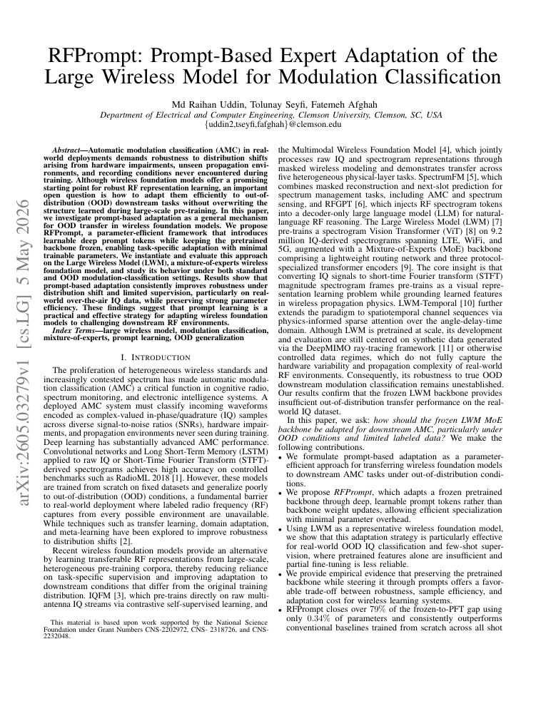
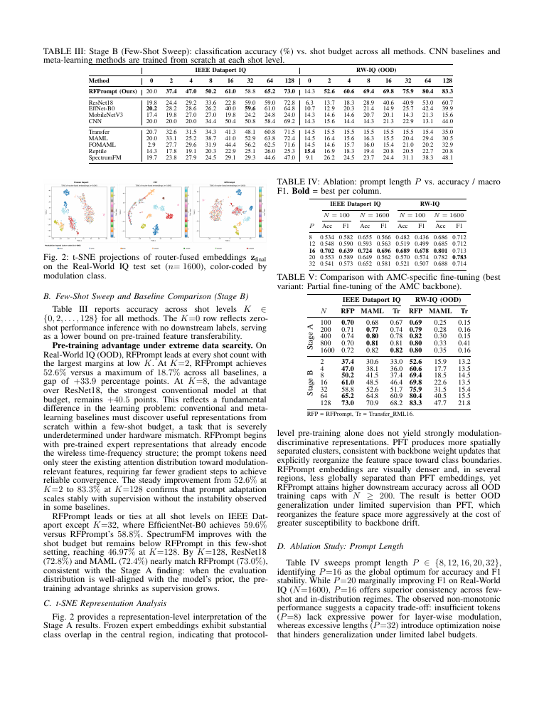

RFPrompt:
adapt a wireless model with prompts.
RFPrompt adapts a frozen large wireless model with small, expert-specific prompt tokens for modulation classification. The approach targets parameter-efficient learning when labels are limited and the test signal distribution shifts away from training data.
Classify the signal. Stress the adaptation.
Upload or stream IQ samples, choose modulation classes, and compare frozen, partially fine-tuned, and RFPrompt adaptation under limited-label and out-of-distribution conditions.
Key results
On the Real-World IQ test set, RFPrompt peaks at 0.82 accuracy at N=400, exceeding the reported frozen and partially fine-tuned baselines.
The prompt-based adaptation uses about 0.34% trainable parameters in the reported comparison, while keeping the backbone frozen.
The reported sweep identifies P=16 as the best prompt length for the evaluated adaptation setting.


Figures are rendered previews from the submitted paper. Read the paper for full-resolution labels and methodology.
Back to research ↗